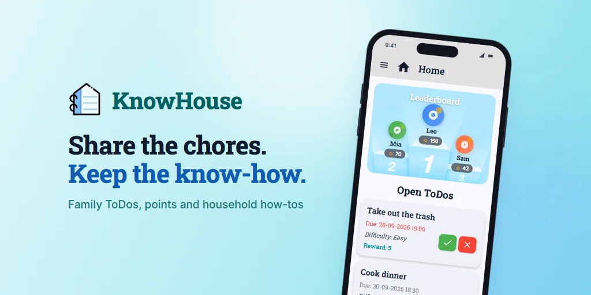

KnowHouse
Share the chores. Keep the know-how.
A family app for household tasks: assign and accept to-dos, earn points, climb the leaderboard and keep instructions for how things are done at home. It started as a team project and is now published on Google Play.
- Real-time collaboration, shared calendar, personalised task recommendations and user profiles
- 200+ unit, provider and widget tests
- CI/CD with GitHub Actions: every release is versioned, signed and uploaded to Google Play automatically